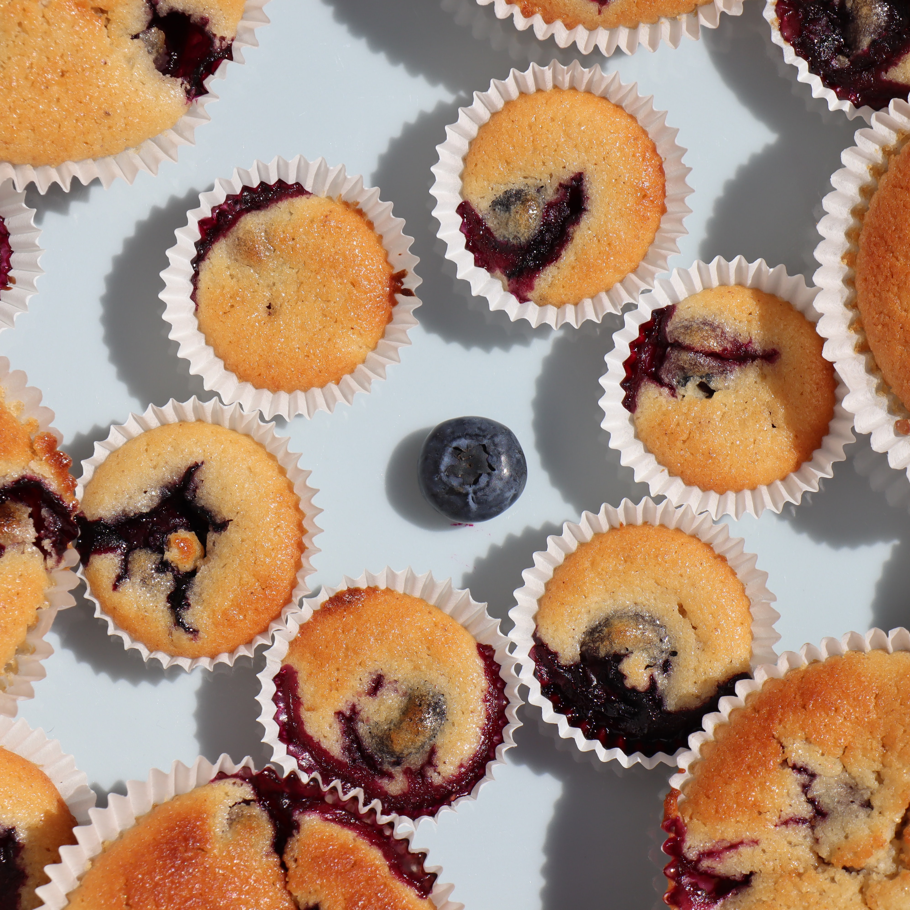

Cherry on Top
Making Life Sweeter One Bite at a Time
Cream Cheese Muffins
So small but so delightful!
4 eggs
250 g sugar
1 vanilla bean
200 g cream cheese (Philadelphia or Mascarpone)
325 g flour
1 package baking powder
125 g butter, melted
250 g raspberries
Active: 10 mins
Baking: 20 mins
Total: 30 mins
Preheat oven to 180°C
Bake 20 mins
Beat the eggs with the sugar and the scraped out vanilla pod with a mixer until foamy.
Add the cream cheese and mix well.
In a second bowl mix flour and baking powder.
Quickly mix the dry ingredients with the moist ones so that the dry one becomes just moist.
Add melted butter and raspberries and mix until smooth.
Pour into muffin tray and bake for 20 minutes.
Enjoy!
Both fresh or frozen berries can be used for the muffins.
